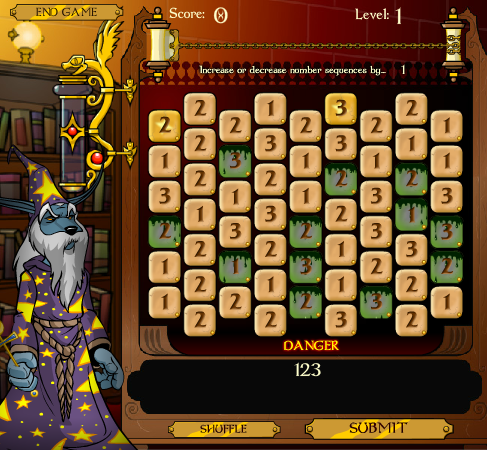

PA e PG
Sobre PA
PA é a abreviação de progressão aritmética, que é um tipo de sequência numérica (sequências numéricas em si são sucessões de números que seguem padrões) cujo cada termo (isso a partir do segundo termo) é a soma do termo anterior com uma constante chamada r. Um exemplo de progressão aritmética é (8, 16, 24, 32, 40, 48, ...), e as mesmas podem ser caracterizadas em crescentes (quando r > 0, o que resulta em cada termo sendo maior que o anterior); constantes (quando r = 0, o que resulta em todos os termos serem iguais) e descrescentes (quando r é menor que 0, o que resulta em cada termo sendo menor que o anterior).
A fórmula usada para encontrar o termo geral de uma progressão aritmética é a fórmula aₙ = a₁ + (n - 1)r, sendo que aₙ é o termo geral, a₁ é o primeiro termo, n é número de termos (ou a posição do termo) e r é é a razão.
Outra fórmula importante nesse conteúdo é a soma dos termos de uma progressão aritmética finita, que é (a₁ + aₙ)n/2.
Sobre PG
PG é a abreviação de progressão geométrica, que é uma sequência de números cujo quociente q ou razão entre um número e outro (menos o primeiro) é sempre igual. Resumindo, o número multiplicado pelo q da sequência, corresponderá ao próximo número. Um exemplo disso é a seguinte sequência: (2,4,8,16, 32, 64, 128, ...). Progressões geométricas podem ser caracterizadas como crescentes (quando q > 1 [aí tem valores positivos] e 1 > q > 0 [aí tem valores negativos], fazendo com que cada termo seja maior que o outro); constantes (quando a₁ e q são nulos, e quando a₁ é diferente de 0 e q é 1, fazendo todos os termos da PG serem iguais); decrescentes (quando 1 > q e 0 > q > 1, fazendo cada termo ser menor que o outro); alternantes (quando 0 > q, que faz cada termo ter um sinal diferente do outro) e, por fim, estacionário (quando apenas o primeiro termo não é igual a 0, uma vez que a₁ é diferente de 0 e q = 0).
A fórmula para achar o termo geral de uma PG é aₙ = a₁ . qⁿ⁻¹. Já a soma dos termos de uma PG finita é definida pela fórmula Sₙ = a₁ . 1 - qⁿ/1 - q.
Minha Experiência
PA e PG foi meu conteúdo favorito de estudar durante esse ciclo. Isso pode parecer estranho, mas eu tenho uma mania de ficar encontrando padrões numéricos nas coisas que eu vejo e foi legal estudar sequências porque isso é algo que eu geralmente já procuro em conjuntos que nem eram para ser progressões aritméticas ou geométricas (não que eu ache sempre, mas é divertido tentar). Além disso, acho que não tive dificuldade nesse assunto (achei as fórmulas relativamente fáceis de entender e memorizar), o que foi refletido nas atividades da semana, uma vez que não errei nada dessa parte. Acho que eu criei esse hábito de procurar sequências porque quando eu era criança, eu jogava um jogo chamado "Feitiço dos Símbolos", em que você tinha que ir criando sequências de números com a lei de formação dada. Foi assim que eu decorei a tabuada do 2, na verdade, já que os níveis mais fáceis eram sempre sequências de números pares que iam de 2 em 2, e eu acabei memorizando a ordem.

Coisas aleatórias que eu aprendi jogando Neopets à parte, eu também gostei muito de realizar as atividades do Trabalho 3. Como progressões aritméticas e o geométricas já são algo que eu acho divertido de calcular, eu achei essas questões particularmente bem legais e refiz elas várias vezes. Minha favorita foi a 2, porque é uma fórmula relativamente simples. Eu até procurei questões fora das disponiblizadas no material didático, livro e trabalhos porque é algo que eu adoro estudar. Em geral, PA e PG foi algo que eu aprendi facilmente e amei estudar sobre.